Voronoi Diagrams in 3D Space with the Karlsruhe Metric
Overview
This project explored Voronoi diagrams in 2D and 3D using the Karlsruhe metric.
The focus was using GPU-based techniques, in particular the fragment shader.
The project was carried out by Samuel Essig under the supervision of Dr. Susanne Krömker as part of an Advanced Software Practical at Heidelberg University.
A web version of the final program can be found here.
This practical continues the work from an earlier
software practical by Sebastian Zins.
Motivation
While the Euclidean metric is intuitive and familiar, other distance metrics are harder to grasp. Voronoi diagrams provide a visual way to understand such metrics. In 2D, Voronoi diagrams are well understood and widely studied, especially with the Euclidean metric. Voronoi diagrams in 3D are less explored, and the combination of 3D Voronoi diagrams with non-Euclidean metrics is an even more niche topic. The goal of this practical was to provide an interactive 3D visualization that allows exploring the properties of the Karlsruhe metric and its Voronoi diagrams.
Karlsruhe Metric
The Karlsruhe metric is inspired by the layout of the city of Karlsruhe (sometimes it is referred to as the Moscow metric). In case of Karlsruhe, the castle is at the center of the city and it corresponds to the origin.
You can travel the city on roads that either radiate outwards from the castle like spokes on a wheel or on roads that form circles around the castle. The Karlsruhe distance function combines these two ways of traveling on radial rays and circular arcs and chooses the shortest combination.
There are only two possible combinations for the shortest path between two points. Either the path consists of two radial segments through the origin, or it consists of a circular arc and a radial segment.
The switch between these two paths happens when the angle between the two points is 2 rad (≈114.6 degrees). This will be explained in more detail below.
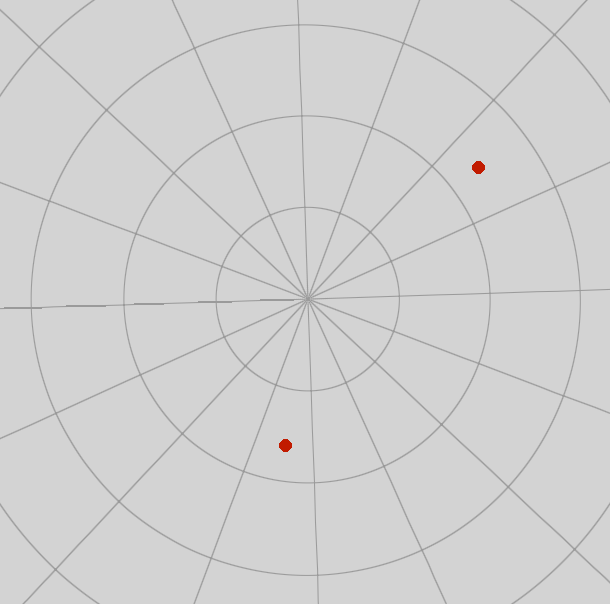
Examples of the two possible types of paths in the Karlsruhe metricIn 3D, the Karlsruhe metric is similarly defined, but instead of circular arcs we have spherical arcs on spheres centered at the origin. This can be imagined as traveling on the layers of an onion. Imagine two points A and B: Point A is on a sphere centered in the origin and point B is on a smaller sphere. To travel from A to B, you first go radially inward from point A to the smaller sphere, and then you travel on the surface of the smaller sphere to point B.
Calculating the Karlsruhe Metric
The Karlsruhe distance between two points and can be defined as follows:
and are the distances from the origin to the points.
The path along a radial segment and a circular arc is
The path through the origin is
In 2D, the Karlsruhe distance can easily be calculated by using the polar coordinates of the points. The polar coordinates contain the radius, and the angle 𝛿 is calculated by the absolute difference of the angle-coordinate of the two points.
In 3D, the angle δ between two points is computed using the dot product:
The Karlsruhe metric can be extended to higher dimensions as well, but the calculation of the angle between two points becomes more complex with increasing dimensions.
The switch at 2 radians
The switch between the two path options occurs when the angle 𝛿 between the points is equal to 2 radians (≈114.6 degrees). The two paths are the same length at this angle.When 𝛿 < 2, the shortest path consists of a circular arc and a radial segment.
When 𝛿 > 2, the shortest path consists of two radial segments through the origin.
We can write the Karlsruhe distance as a piecewise function with two cases:
This means that the distance function is continuous but not smooth at 2 radians.
Voronoi Diagrams
A Voronoi diagram of a set of points is a partitioning of space into regions called Voronoi cells.
A cell consists of all locations that are closer to that point than to any other point under a chosen metric.
The special case of a set of two points is useful to understand how the Voronoi diagram is constructed.
The boundary that separates the space in two regions is called the bisector.
In 2D, with the Euclidean metric, the bisector is a straight line equidistant from both points:
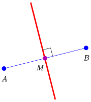
The perpendicular bisector in the Euclidean metric. Image by Ag2gaeh / CC BY-SA 4.0{kind=link}
In 3D, with the Euclidean metric, the bisector becomes a plane equidistant from both points.
To construct the Voronoi diagram in the Euclidean metric, the naive approach is to calculate the bisectors for all pairs of points and then find the intersections of these bisectors. More efficient algorithms can compute Voronoi diagrams in O(n log n), for example the Fortune's algorithm also known as wavefront algorithm.
Method
Instead of constructing the Voronoi diagram, a visualization can be created by coloring each pixel according to its closest point. We start with a set of n points in 2D or 3D space and label each point with a unique color. For each pixel on the screen, we calculate the distance from the pixel's position to each point using our distance metric (in this case the Karlsruhe metric). The pixel is then colored with the color of its closest point. For each pixel, n distance calculations are required. This approach is very suitable for rendering using shaders on the GPU. The fragment shader runs for each pixel on the screen and calculates the color of the pixel anyway. In each fragment shader invocation we can calculate the distances to all points, determine the closest point and return its color. Sebastian Zins' software practical demonstrated this approach for Voronoi diagrams on the surface of the sphere. His implementation shows that this approach is feasible and allows for interactive exploration. The number of points is limited by the performance of the GPU, but since this is a visualization, the useful number of points is already limited by human perception.
Implementation
The program was developed in the Unity game engine. The scene contains a single sphere that represents the 3D space. The points are randomly distributed inside the sphere and can be moved interactively with the mouse. Different fragment shaders are applied to the sphere to visualize the Voronoi diagrams:
Sphere surface
A first approach was to restrict the points to the surface of the sphere, similar to Sebastian Zins' implementation. The shader runs for each pixel that corresponds to a location on the sphere surface: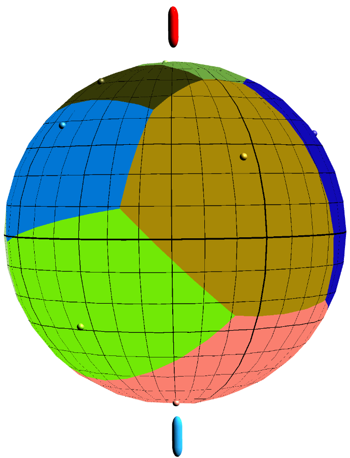
Voronoi diagram of the Karlsruhe metric on the sphere surfaceThe resulting Voronoi diagrams are the same as the "great-circle distance" except in cases where the angle between two points is larger than 2 radians.
The program of this approach can be found here: Spherical-Karlsruhe-Metric
Onion Layers
The next step was to extend the program for points inside the sphere. If the path of the Karlsruhe distance goes along an arc, the arc has the same radius as the point with the smaller radius. This can be imagined as layers of an onion. Each point creates a layer which is a sphere centered at the origin. The Karlsruhe path between two points travels on the layer of the point with the smaller radius and then goes radially outward to the other point. The following image shows the path of the Karlsruhe distance on the "onion layer" of the point with the smaller radius. The onion layers are colored according to which point is closer and the red line indicates the bisector: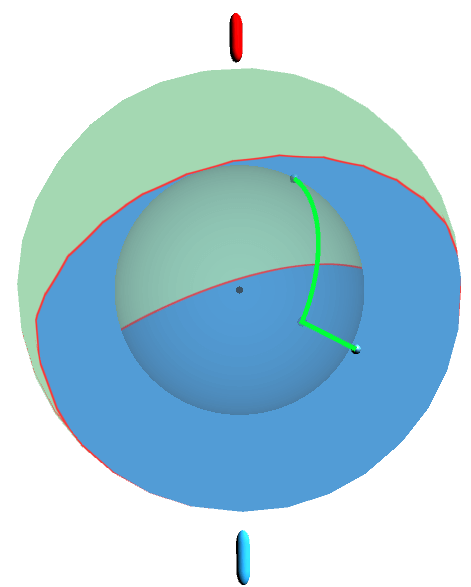
Onion layers of Karlsruhe metric for two pointsIn the program this shader can be selected in the menu as "Onion Layers".
Source code of this shader: Onion Layers.shader
Cross-Sections
Another approach is to show a cross-section or slice of the sphere that can be moved interactively through the sphere: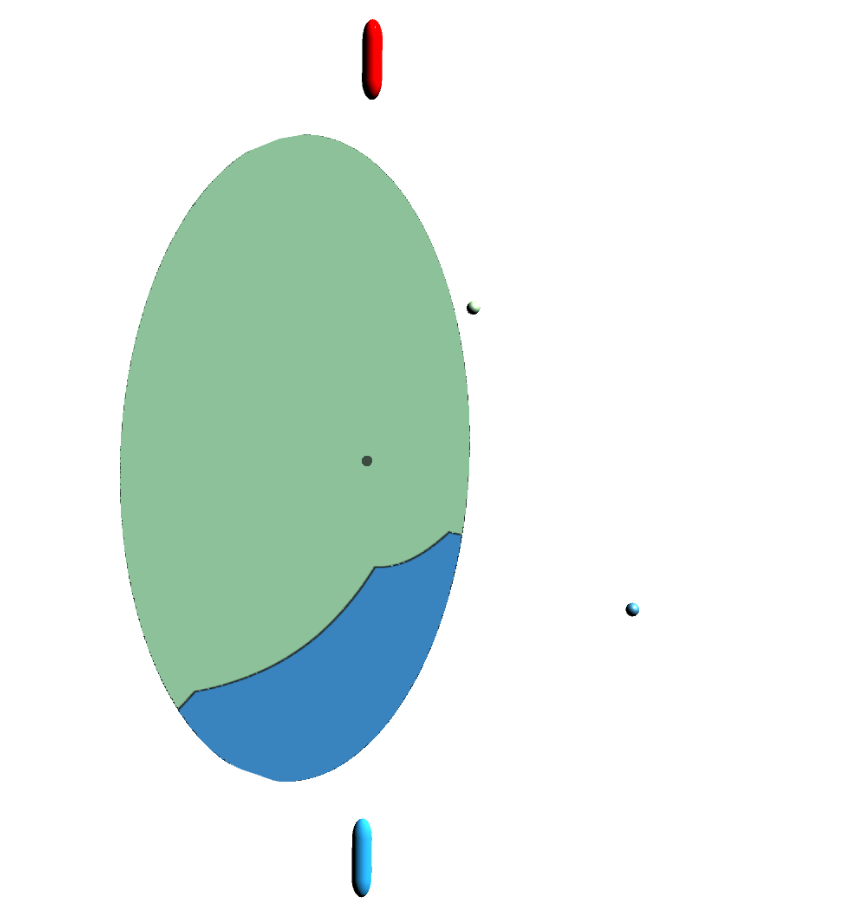
Cross-section sliding through the sphere to show the Voronoi diagram of two pointsThe fragment shader is used similarly to the surface approach: instead of calculating the color for each pixel on the sphere surface, the color is calculated for each pixel on the cross-section plane. The position and tilt of the cross-section plane can be controlled interactively with the mouse or keyboard.
This makes it possible to use multiple points and multiple cross-sections:
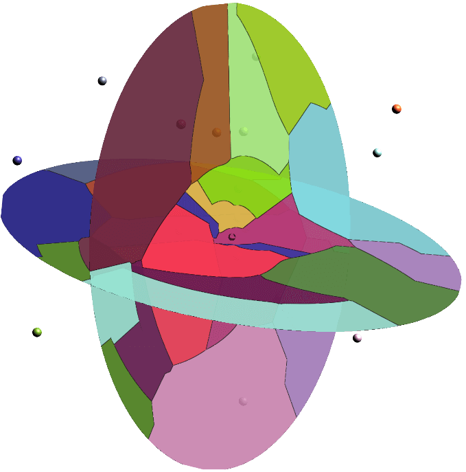
Two perpendicular cross-sections through the sphere showing the Voronoi diagram of multiple pointsAlthough at first glance this approach looks like it uses meshes for the cross-sections, it is only a fragment shader. The main challenge of this approach is to correctly blend the colors of multiple cross-sections. Because the slices are not 3D meshes, the shader cannot rely on the depth buffer/z buffer for ordering. Instead, the shader calculates a color value for each cross-section and then sorts the colors by distance from the camera. Then the colors are blended from back to front to achieve the correct transparency effects.
In the program this shader can be selected in the menu as "Slices".
Source code of this shader: Slices.shader
A 2D version of this shader can be selected in the program as "2D on circle". The 2D version puts all the points on the same plane (y=0) and then uses the y=0 plane as the cross-section.
|
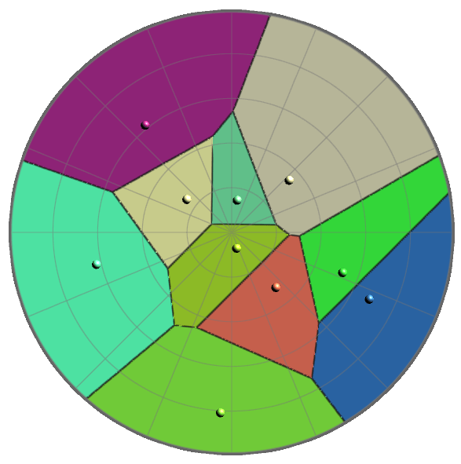 Euclidean |
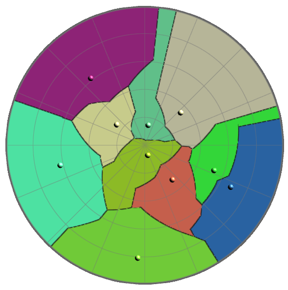 Karlsruhe |
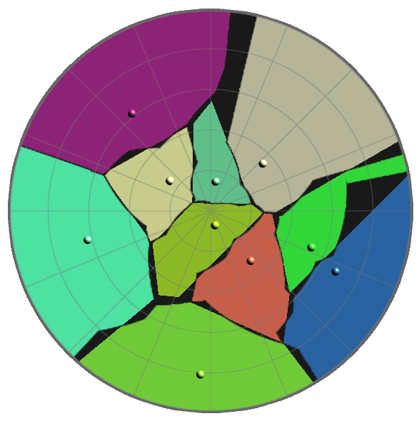 Difference |
Source code of the 2D shader: 2D on Circle.shader
Ray Marching the Bisector Surface
Another idea to explore the metric is to start with just two points. In the Euclidean metric this means a straight line (2D) or a plane (3D) as the bisector. The bisector in 3D with the Karlsruhe metric is a more complex surface. Instead of calculating the bisector surface analytically, ray marching is used to approximate the surface in the fragment shader. Ray marching is a technique where for each pixel a ray is cast into the scene. It is conceptually similar to ray tracing, but instead of calculating exact intersections of the ray with geometric objects, we march along the ray in small steps to find an implicitly defined surface.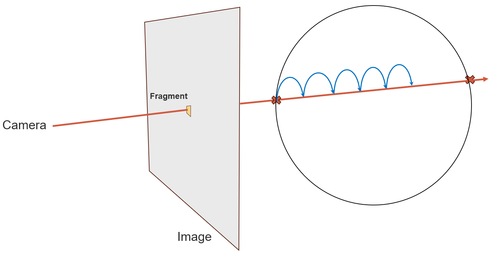
Ray marching in a sphereIn our case the implicit surface (the bisector) is the set of points that are equidistant to both points and according to the Karlsruhe metric.
We can define the surface as the points X with
This can be interpreted as a root finding problem where we want to find the points where the difference of the distances to both points is zero:
We march along the ray in small steps and evaluate the function F at each step. When the sign of the function changes between two steps, we know that the root must be in the last step:
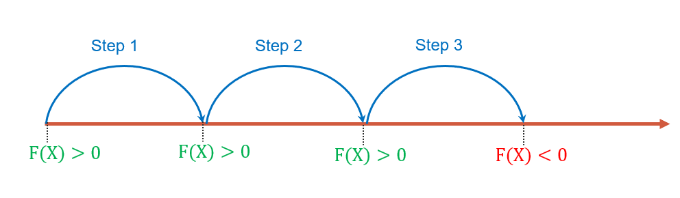
Root finding with ray marching by detecting a sign changeWe can now further improve the accuracy by using a numerical root finding algorithm, for example linear interpolation (Secant method) or Newton's method. For this visualization, a single linear interpolation step was sufficient to achieve adequate accuracy.
The following animation shows the resulting bisector surface between two points.
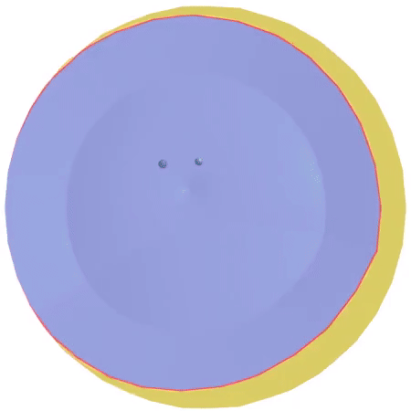
The bisector surface between two points in red. The sphere can be shown or hidden.In the program this shader can be selected in the menu as "Bisector Surface".
Source code of this shader: Bisector Surface.shader
The ray marching approach can be extended to more than two points to visualize the boundary of a single Voronoi cell. However, this becomes computationally expensive because for each step along the ray, the distance to all points needs to be calculated. For a small number of points (~10) this still allows interactive exploration of the Voronoi region. The more points there are, the lower the frame rate becomes and the interactivity is lost.
In the program this shader can be selected in the menu as "Single Cell Boundary".
Source code of this shader: Single Cell Boundary.shader
Properties of the Karlsruhe Metric
Some of the properties of the Karlsruhe metric that differ from the Euclidean metric, can be observed in the Voronoi diagrams and bisectors:
Translation Invariance
Unlike the Euclidean metric, the Karlsruhe metric is not translation invariant. This means if we move two points by the same vector, the distance between them can change. The Karlsruhe distance depends on the position of the points with respect to the origin.This can be visualized by moving all points in the scene by the same vector, in the program this can be done by holding the SHIFT key while dragging one point with the mouse.
Degenerate Bisectors
In the Euclidean metric, the bisector between two points is always a straight line (2D) or a plane (3D). In the Karlsruhe metric, the bisector in 2D is usually a piecewise curve consisting of circular arcs and line segments, in 3D it is a piecewise surface of flat patches and conical patches. However, there are degenerate cases where the bisector becomes more complex. This happens when two points have the same distance from the origin:We can calculate the bisector in 2D for two points and by finding the set of points X where the distances to both points are equal:
$$ d_k (P_1,𝑋) = d_k (P_2,𝑋) $$ We look at the first case and set the distances equal to each other to find the bisector:
$$ min(r_1,r_𝑥 )⋅𝛿(P_1,𝑋)+|r_1−r_𝑥 |= min(r_2,r_𝑥)⋅𝛿(P_2,𝑋) + |r_2−r_𝑥 | $$
With the same radius $$r_1=r_2=𝑟$$ for both points, it changes to
$$ min(𝑟,r_𝑥 )⋅𝛿(P_1,𝑋)+|𝑟−r_𝑥 |=min(𝑟,r_𝑥)⋅𝛿(P_2,𝑋)+|𝑟−r_𝑥 | $$
which is $$𝛿(P_1,𝑋)=𝛿(P_2,𝑋)$$
The points X that satisfy this equation form the bisector, they are independent of the radius and only depend on the angle 𝛿. The bisector is no longer "thin" but a region.
In 2D, the degenerate bisector looks like a pizza slice with the tip at the origin (the visualization cannot show that it is extending to infinity in the other direction). In 3D, the bisector looks like a cone with the tip at the origin.
|
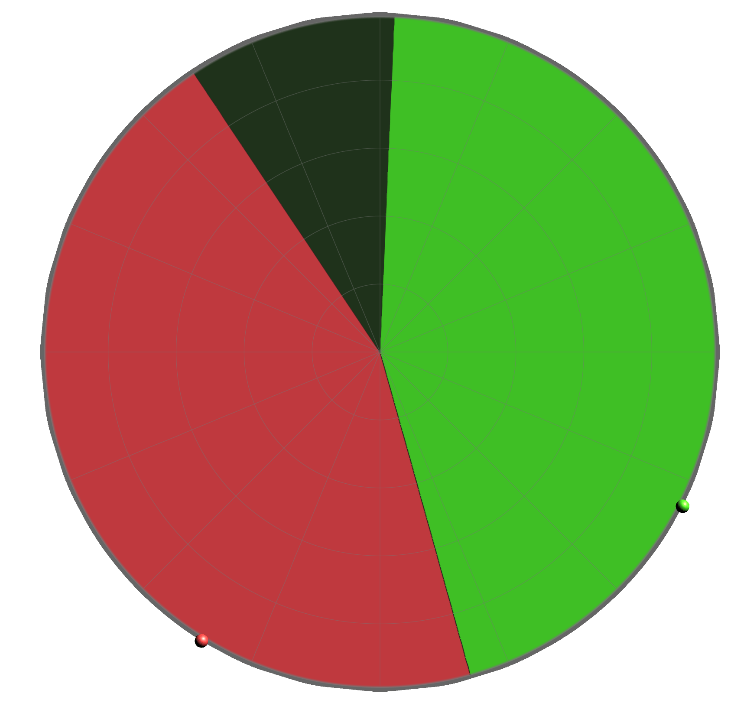 In 2D |
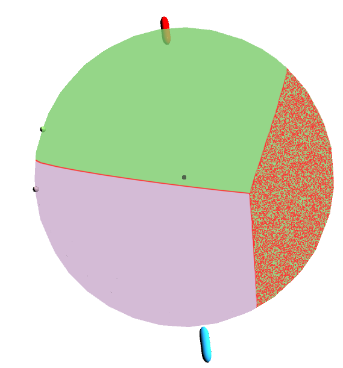 On sphere surface |
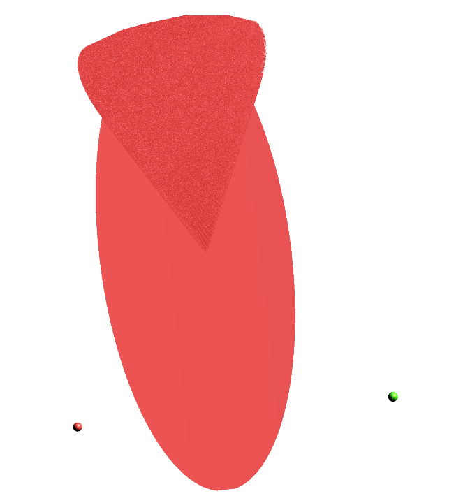 In 3D |
In the visualizations, the degenerate bisectors cause problems. For example, the idea of the ray marching algorithm is to find the single root by looking for a sign change. If the bisector is not a thin surface but a volumetric region, the function is zero over an interval instead of at a single value. This breaks the assumption of the ray marching algorithm and leads to artifacts in the visualization.
Unit Circle/Sphere
The unit circle in 2D or unit sphere in 3D centered at the origin is the same in the Karlsruhe and Euclidean metric. However, if the center is moved away from the origin, the shape becomes distorted as it is no longer a circle: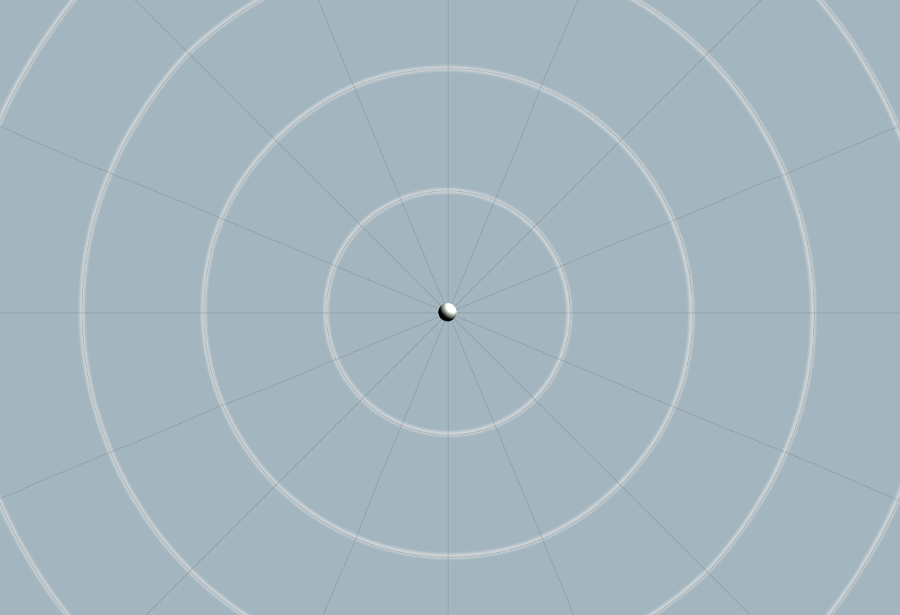
m-Starshapedness
The Voronoi cells in the Karlsruhe metric are neither convex in the euclidean sense, nor under the Karlsruhe metric. However, they are m-starshaped regarding the Karlsruhe metric. This means that for the point that defines the Voronoi cell, all points in the Voronoi cell can be reached from that point by a path that is entirely contained within the Voronoi cell. The path is not the euclidean straight line, but the path is defined according to the metric. Notably this is only true from the point that defines the Voronoi cell, but not necessarily for other pairs of points inside the Voronoi cell, as can be seen in the following figure: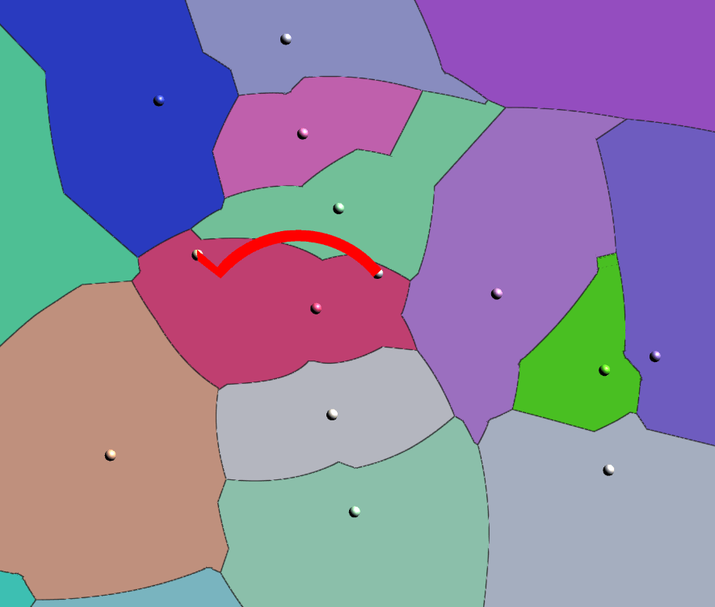
Voronoi cells are not convex under the Karlsruhe metric,the shortest path between a pair of points can leave the Voronoi cell.
Dehne and Klein show this property in The big sweep: On the power of the wavefront approach to Voronoi diagrams. They propose to use Fortune's sweepline algorithm for constructing Voronoi diagrams in non-Euclidean metrics. One of the requirements for their algorithm is the m-starshapedness property of the Voronoi cells.
Discussion
Using fragment shaders to visualize Voronoi diagrams in 3D with the Karlsruhe metric allows interactive exploration of the properties of the metric and its Voronoi diagrams.
The points can be moved interactively, parameters can be adjusted and the visualization offers feedback in real time.
The main limitation of this approach is the number of points that can be visualized interactively.
In the ray marching visualization, there is also an approximation error due to the step size and numerical root finding.
The number of steps along the ray needs to be adjusted to the screen resolution to achieve sub-pixel accuracy.
A sphere was used as the 3D space for the visualization.
The sphere fits the Karlsruhe Metric well because the metric is defined with respect to the origin and uses arcs.
However the sphere can be less intuitive as a 3D space, because we are used to exploring 3D space with the boundary at the border of the screen.
This could make it harder to imagine that Voronoi cells can extend beyond the sphere into infinity.
The cross-section visualization is a useful way to explore the 3D Voronoi diagrams, but it has limitations.
To get a complete understanding of the 3D structure, multiple cross-sections need to be explored. Either by moving a cross-section through the sphere or by using multiple cross-sections at the same time.
Two perpendicular cross-sections can give a better idea of the 3D structure. More cross-sections could be added, but this quickly becomes visually cluttered and hard to interpret.
The biggest problem is that the cross-sections need to be semi-transparent to see multiple cross-sections and the points at the same time.
Two transparent objects (two cross-sections or one cross-section and a semi-transparent sphere surface) can be visually separated, but with more than two, it becomes hard to distinguish the different layers.
Overall, the project demonstrates that fragment-shader-based approaches are a powerful tool for exploring Voronoi diagrams in 3D.
For demonstrating the differences between the Karlsruhe metric and the Euclidean metric, the 2D visualizations are more effective than the 3D visualizations.
The 3D visualizations are best suited for interactive exploration and not for static illustrations.
Future Work
Instead of focusing solely on the Karlsruhe metric and the Euclidean metric, other distance metrics could be explored in 3D using the same visualizations.
Additional techniques for visualizing three-dimensional Voronoi diagrams could be implemented.
One direction could be volume rendering of Voronoi cells. This could solve issues with degenerated bisectors, that aren't thin surfaces but volumetric.
An example of volume rendering of Voronoi diagrams is described by Nielsen in A Volume shader for quantum Voronoi diagrams inside the 3D Bloch ball.
Algorithmic approaches could also be investigated further. Fortune's algorithm, also known as the wavefront algorithm, could be implemented, as described by Dehne and Klein in
The big sweep: On the power of the wavefront approach to Voronoi diagrams. A visualization of the wavefront propagation under the Karlsruhe metric could offer more insight into the structure of the Voronoi diagrams.
Finally, potential applications of the Karlsruhe metric could be explored.
Links
- Demo: https://samuelessig.github.io/Karlsruhe-Metric-in-3D/
- Source code: https://github.com/samuelessig/Karlsruhe-Metric-in-3D
- Demo for the sphere surface program: https://samuelessig.github.io/Spherical-Karlsruhe-Metric/
- Source code of the sphere surface program: https://github.com/samuelessig/Spherical-Karlsruhe-Metric
- Presentation slides: pptx/pdf
- Email contact: vorname.nachname@stud.uni-heidelberg.de or vorname.nachname@gmx.net
- Earlier software practical by Sebastian Zins: https://pille.iwr.uni-heidelberg.de/~voronoi01/
References
- Aurenhammer, F., Klein, R., & Lee, D. T. (2013). Voronoi Diagrams and Delaunay Triangulations. World Scientific.
- Proof of m-starshapedness: Klein, R. (2005). Algorithmische Geometrie (p. 359). Springer Berlin Heidelberg.
- Ray Marching: Reiner, T., Mückl, G., & Dachsbacher, C. (2011). Interactive modeling of implicit surfaces using a direct visualization approach with signed distance functions. Computers & Graphics, 35(3), 596–603
- Ray Marching: Singh, J. M., & Narayanan, P. J. (2010). Real-Time Ray Tracing of Implicit Surfaces on the GPU. IEEE Transactions on Visualization and Computer Graphics, 16(2), 261–272.
- A ray marching shader with shading: McGuire, M. (2014). Numerical Methods for Ray Tracing Implicitly Defined Surfaces.
- Example of volume rendering Voronoi diagrams: Nielsen, F. (2008). A Volume shader for quantum Voronoi diagrams inside the 3D Bloch ball. In ShaderX7 (pp. 225–228). Charles River Media/Thomson Publishing.